人盯人：布莱顿的逼抢如何让阿森纳窒息
Man for Man: How Brighton's Press Suffocated Arsenal
比分：布莱顿 3–0 阿森纳
布莱顿刚刚以 3–2 客场击败曼联（老特拉福德）的余威中迎来本场比赛，而阿森纳则带着防守清白之身，以及"能够掌控比赛、并像欧洲少数球队那样稳稳收下胜利"的名声。比赛最终以 3–0 结束，围绕布莱顿逼抢的炒作随之铺天盖地。本文分析其背后的机制：他们贯穿全场的人盯人式逼抢、不对称的进攻组织、夺回球权后的转换行为，以及三个进球本身。
基本理念：有控制的强度
阿尔特塔的阿森纳，是全欧洲在无球状态下掌控比赛最强的球队之一。任何想要建立秩序（organized）的对手，都是在阿森纳自己的地盘上踢球。因此，许尔策勒（Hürzeler）决定放弃"控制"——不是以低位防守（low block）那种方式交出控制，而是主动制造一种混乱的比赛状态，而这种混乱是布莱顿自己制造的，因此他们早有准备。
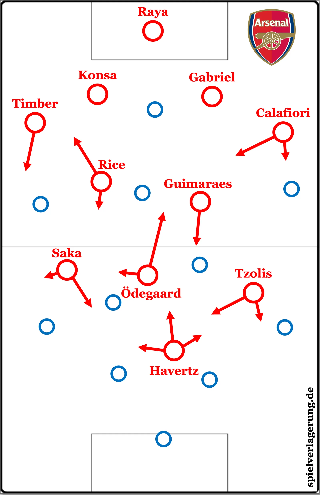
图：阿森纳（FC Arsenal）的有球体系与跑动
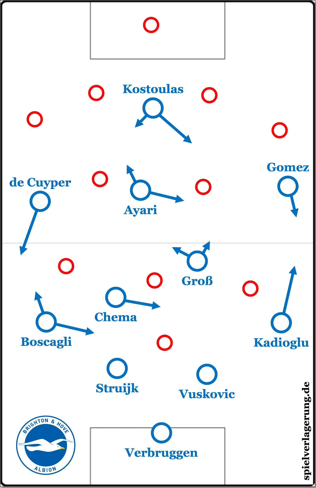
图：布莱顿（Brighton & Hove Albion）的有球体系与跑动
贯穿九十分钟的主线是：不能让阿森纳在有球或无球时进入有组织的比赛阶段。有三个决定实现了这一点。
第一，进攻组织被设计成不对称——在右路，布莱顿为长传做准备，并在球传出之前就占据落点区域；在左路，反向跑动为短传路线打开空间。这从来不是"用长传替代短传"，而是两个都已准备好的选项，它们会对阿森纳提出截然相反的应对要求。
第二，夺回球权后，球不会被稳住，而是立刻冒险。因为把球稳住，恰好给了对手重新组织所需的几秒钟。
第三，逼抢依赖强度和不断更新的起点：当一条线被打穿时，布莱顿不会原地不动，而是重新建立阵型、再次触发逼抢。
这三个决定在经典意义上都放弃了控球。控制反而来自"准备"——如果你知道球会落到哪里，并且提前站在那里，你就在无球状态下控制了局面。
随后发生的一切都可以归结为一个数字：阿森纳在本方危险区域出现了 41 次丢球。这不是一支如此水准的球队因为踢得差而产生的数字，而是因为他们从未进入其进攻组织所适应的比赛状态。
无球阶段：全场人盯人
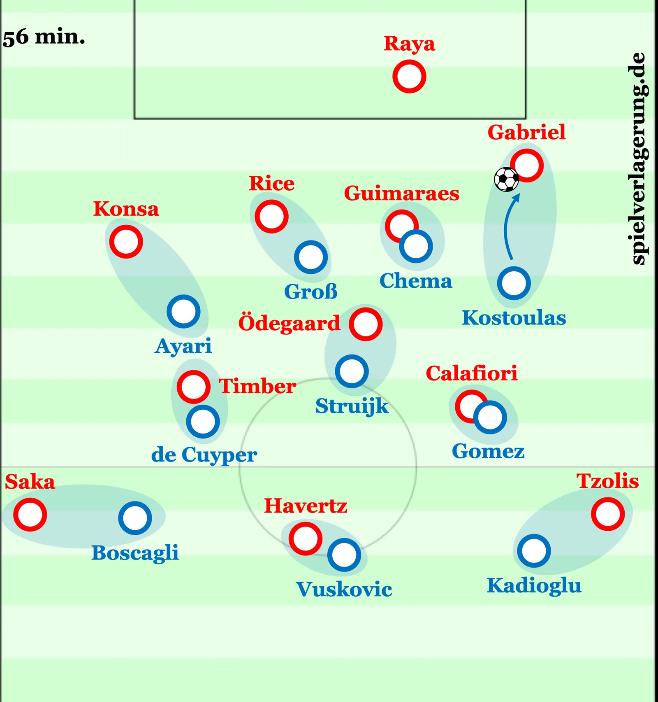
图：布莱顿针对 4-3-3 的人盯人式逼抢
布莱顿的逼抢在原则上简单，在执行上要求极高。布莱顿以"参照直接对手"的方式站位，并在触发时切换为纯粹的人盯人。面对一支从第一秒起就跟踪盯防的球队，盯人任务本可被跑动拉扯得支离破碎，但布莱顿拒绝给对手这个机会，因为他们的阵型直到触发瞬间都保持紧凑。
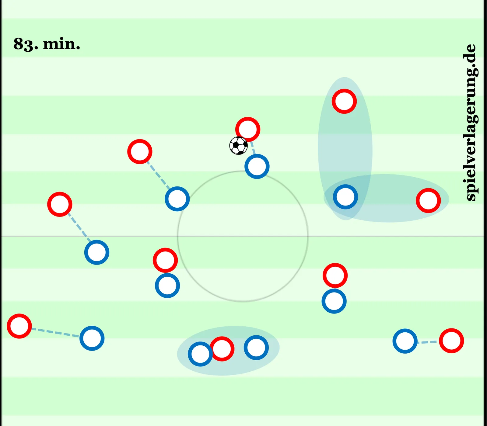
图：在"中场逼抢（mid-block）"中，在最后一线保持"多一人"（+1），但随时准备在逼抢触发时切换为高位逼抢。
"引导"（steering）从阿亚里（Ayari）开始。他弯曲自己的逼抢跑动路线，让孔萨（Konsa）留在自己的"覆盖阴影"（cover shadow）里，迫使拉亚（Raya）转向另一侧。科斯托拉斯（Kostoulas）盯防加布里埃尔（Gabriel），而切马·安德烈斯（Chema Andrés）和格罗斯（Groß）则侵略性地压向阿森纳的两名 8 号位。尤其是格罗斯，他盯防回撤的赖斯（Rice），有时甚至前压到第一逼抢线，在某些回合里一路跟到孔萨身上。这就要求赖斯在同一时刻被队友接手——人盯人既通过交接（handover）运作，也通过跟踪运作。在中路，中锋和 10 号位相应轮转：谁到下一个持球者的路线更短，谁就压出去，另一人则在其身后保护，并在下一次触发时再次接手。
这一体系之所以能维持，全靠中后卫敢于跟出来。武什科维奇（Vušković）和斯特赖克（Struijk）前压到厄德高（Ødegaard）和回撤的哈弗茨（Havertz）身上，防止中路区域出现以少打多（underload）。当阿森纳以三人组成第一线组织时，布莱顿在防线中保留一名中后卫做区域防守——但他始终参照 6 号位空间里那名无人盯防的球员，在逼抢触发的一刻就压上去。因此，阿森纳在进攻组织中的数量优势，从未转化为场上任何位置的多出一人。
拉亚也被纳入盯人方案。阿亚里的覆盖阴影只留下穿过一名 6 号位的路线，而在人盯人之下，那不是一条逃生通道，而是一场从第一脚触球就开始的对决。拉亚的身体姿态强化了这一点：他往往只把身体打开一半，这实际上把"转移到远侧"从他的选项里去掉了。被引导到右脚后，就只剩下右侧的进攻组织通道；左侧长时间敞开，而对于唯一能找到它的球员来说却遥不可及。
每一次回传都是触发信号。 当球回到拉亚或中后卫脚下时，布莱顿整体前压并提高防线。球周围的密度与其说来自基础阵型，不如说来自回追跑动：被过掉的球员全速回追，而且他们不是扑向球，而是带着覆盖阴影跑向球身后的接应选项。因此，一名身后有盯防者的阿森纳球员，既没有横传接应，也没有转身的机会。
这正是布莱顿与多数被阿森纳打穿的球队不同之处。通常的应对是：一旦一条线被突破，就退守深位，等待阵型重新稳定。布莱顿反而压上下一条线，用中场逼抢为下一次跃入高位逼抢做准备——即便那次逼抢刚刚被打穿。因此，逼抢在每个控球回合中不是只有一个起点，而是有一个源源不断的新起点，阿森纳必须在同一次进攻中多次破解同样的压力。
阿森纳的核心问题在于身后没有威胁。他们试图打穿逼抢的尝试缺少越过防线的速度，因此布莱顿从未被迫转身面向本方球门。这让逼抢变得"廉价"：身后没有威胁，就不需要退防线。面对坚决的人盯人，有三种答案——用跑动带走自己的盯防者、为第三人打开空间；用一对一突破击败盯防；或者用一名支点中锋赢下长传。阿森纳一样都没做到。
中场逼抢（中位防守）作为退路
当高位逼抢被打穿时，布莱顿退成一个 5-1-4，并反转了优先级。最后一线五人组刻意对阿森纳的前锋线形成人数优势（overload）——恰恰是在人盯人一方最脆弱的时刻，因为他们的球员正朝前，而对手已经在移动。布莱顿先把局面中的纵深拿走，然后才重新考虑球。
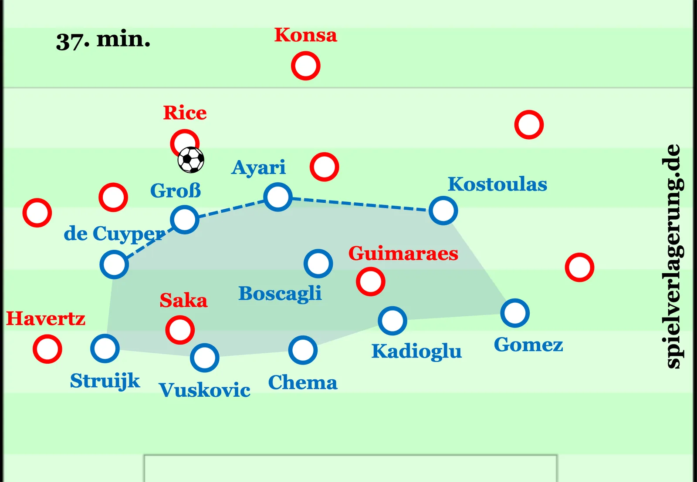
图：一个 5-1-4 阵型的"中场逼抢"。最前面的球员利用覆盖阴影、极其紧凑地横向移动来保护"红区"（危险区）。阿森纳大多被迫绕开防守块转移，反复给布莱顿重新组织的时间。
一名单独的 6 号位在前方保持连接，而最靠前的四名球员保持狭窄，用覆盖阴影封住中路，而不是压迫持球者。阿森纳在近球侧找不到中路的转移，只能绕着防守块打。每一次绕行都耗费几秒，布莱顿则利用这几秒横向移动，于是线路的终点和起点一样拥挤。在某些阶段，最后一线站了六名球员。
这个防守块并非终点。每一次阿森纳回传，布莱顿都会再次跃出，重新启动高位逼抢——和高位阶段相同的触发信号，只是起点更深。最后一线里的"多余一人"（+1）让这成为可能，通常是武什科维奇：因为人数优势让他没有固定对手，他可以前压、覆盖纵深，并在片刻之后自己接手一名球员。这解放了一名中场前压，而不必在身后留下空当——而这恰恰是采用类似打法的球队通常会崩盘的地方。
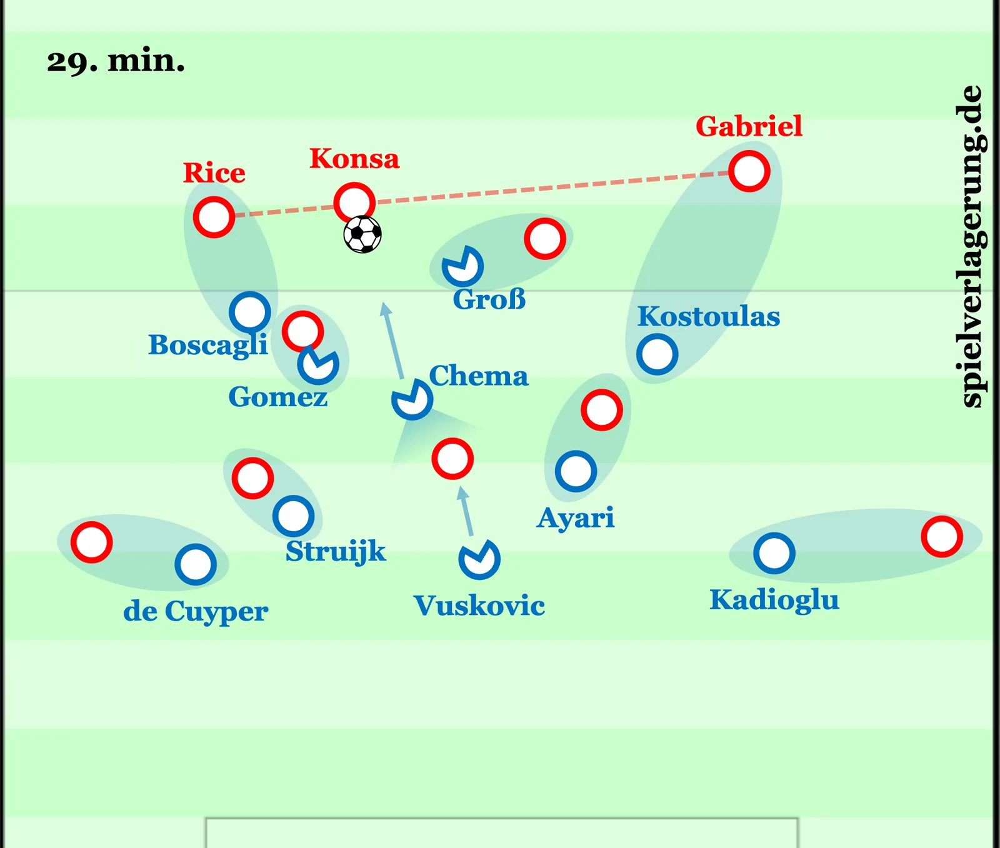
图：在"中场逼抢"阶段，"多余一人"（+1）球员自行组织，以执行提前交接并跃入逼抢情境。此处，武什科维奇作为防线上的"多余一人"前压，接手在 10 号位活动的阿森纳球员。
除此之外还有边线陷阱。一旦布莱顿把球引导到边路，球员们从四面八方跃入：近球侧边锋封住回传路线，6 号位覆盖内侧，防线前压。回传、转移和身后球并非一个接一个消失，而是同时消失。只拿走回传，球队还能转移；只拿走转移，他们还能回传重新开始。当只剩下一个人贴着边线、面对数名对手时，结果几乎总是对方获利。
转换阶段：宁愿冒险，不要稳住
夺回球权后有两种基本选择：立刻冒险出球以发起进攻，或者稳住球以建立秩序。许尔策勒始终选择前者，这直接源于整体理念——稳住球恰好会给阿森纳重新组织起防线的那几秒钟。
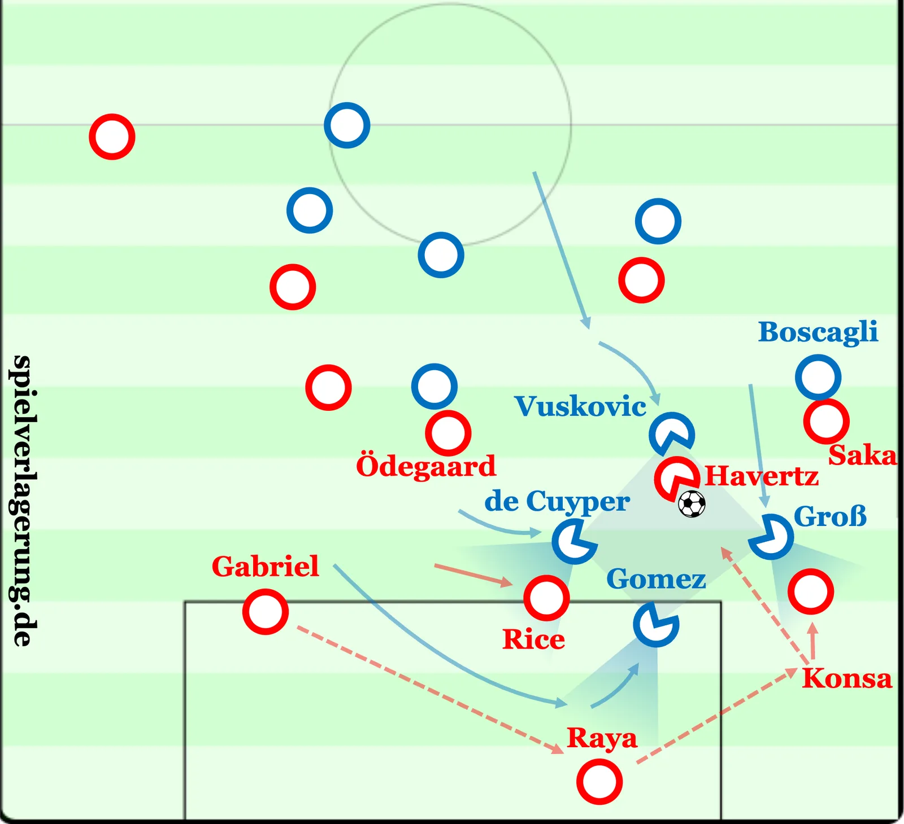
图：当高位逼抢被越过时，布莱顿成功迫使阿森纳在防线前方区域陷入拥挤。此时，被越过的球员横向移动，封堵位于球后方球员的传球路线。这给持球者制造了额外压力，同时他还面临来自前方的"反向"逼抢动作（即朝本方球门方向的逼抢）。
反击在夺回球权之前就已准备好。当阿森纳打穿逼抢后在 6 号位空间找到一名球员时，布莱顿立即封住他的回传路线，于是丢球不可避免地发生在阿森纳全员都在球前方的时刻。球周围的密度在防守上是必要的，在进攻上则意味着布莱顿处于中路，因而处于通往球门的最短路径上。第一脚球传给位置最深的球员，随后是高速带球杀入禁区，没有中间步骤，也没有为了安全而横传。
有球阶段：诱敌深入，然后打身后
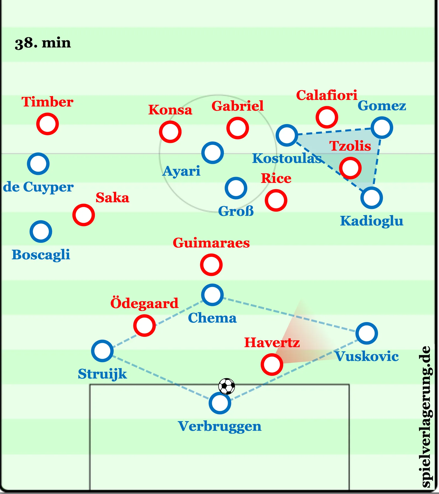
图：在进攻组织阶段，布莱顿使用菱形站位。德库佩（De Cuyper）和博斯卡利（Boscagli）在左路展开 2v2 对抗，而科斯托拉斯、戈麦斯（Gomez）和卡迪奥卢（Kadıoğlu）在右路制造高位 3v3 局面。短暂地，两名中后卫和一名后腰会拉开以拓宽阵型。格罗斯偶尔从 10 号位回撤提供额外支援。阿亚里通过不断跑入身前空当来牵制孔萨和加布里埃尔。
在深度组织阶段，布莱顿刻意引诱阿森纳上钩。费尔布鲁根（Verbruggen）把脚放在球上，同时中后卫拉开，拉长对手的逼抢跑动。纸面上，这形成了对阿森纳第一线的 3v2——但许尔策勒根本无意用地面配合打穿这个人数优势。40 次门将传球中有 25 次是长传，占 62.5%，而且绝大多数飞向右路。
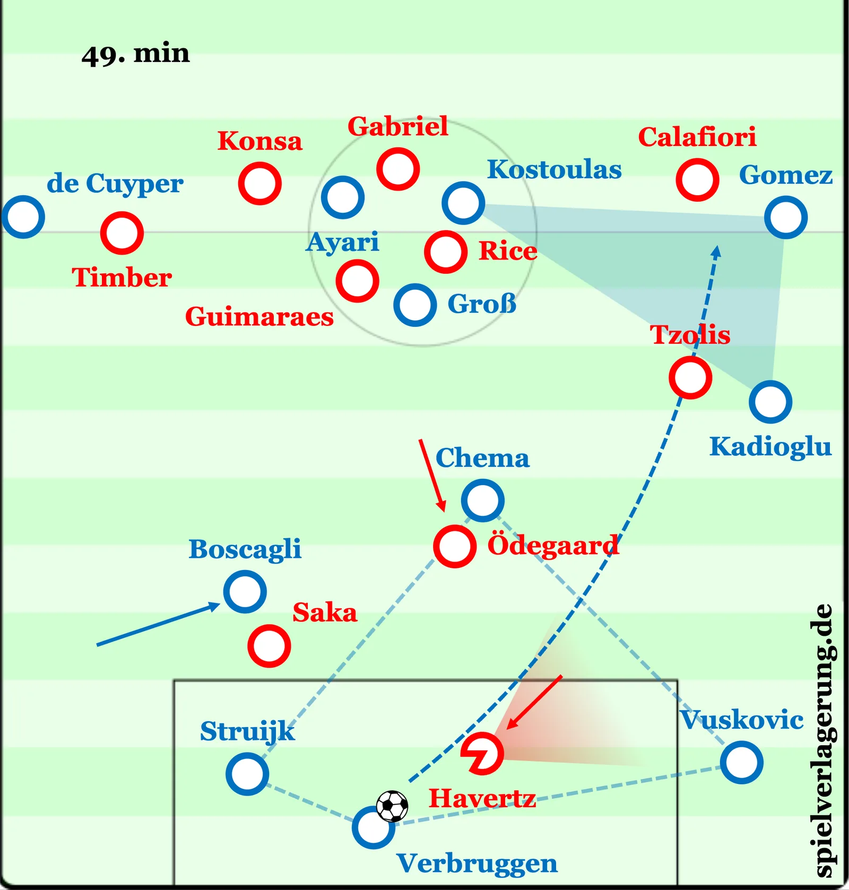
图：这一结构允许把长传打到右路，进入 3-3 阵型。这制造了争抢第二落点或头球摆渡的机会。此外，武什科维奇作为自由球员提供了一个短距离、低平球的选择。
在那里，布莱顿稳定地制造出 3v3——无论第一点是否赢下，都是为第二落点而设的完整结构。这正是它与普通长传的区别：这次行动不是由空中对抗来评判，而是由其后的局面来评判。科斯托拉斯回撤，进一步加剧了阿森纳高防线的混乱，因为一名中后卫必须决定是跟他在各线之间，还是放任他转身。赢下第二落点后，布莱顿高速继续进攻，寻找早早的射门或传中，即便面对防守人数劣势——同样是"速度优先于漂亮进攻"的决定。
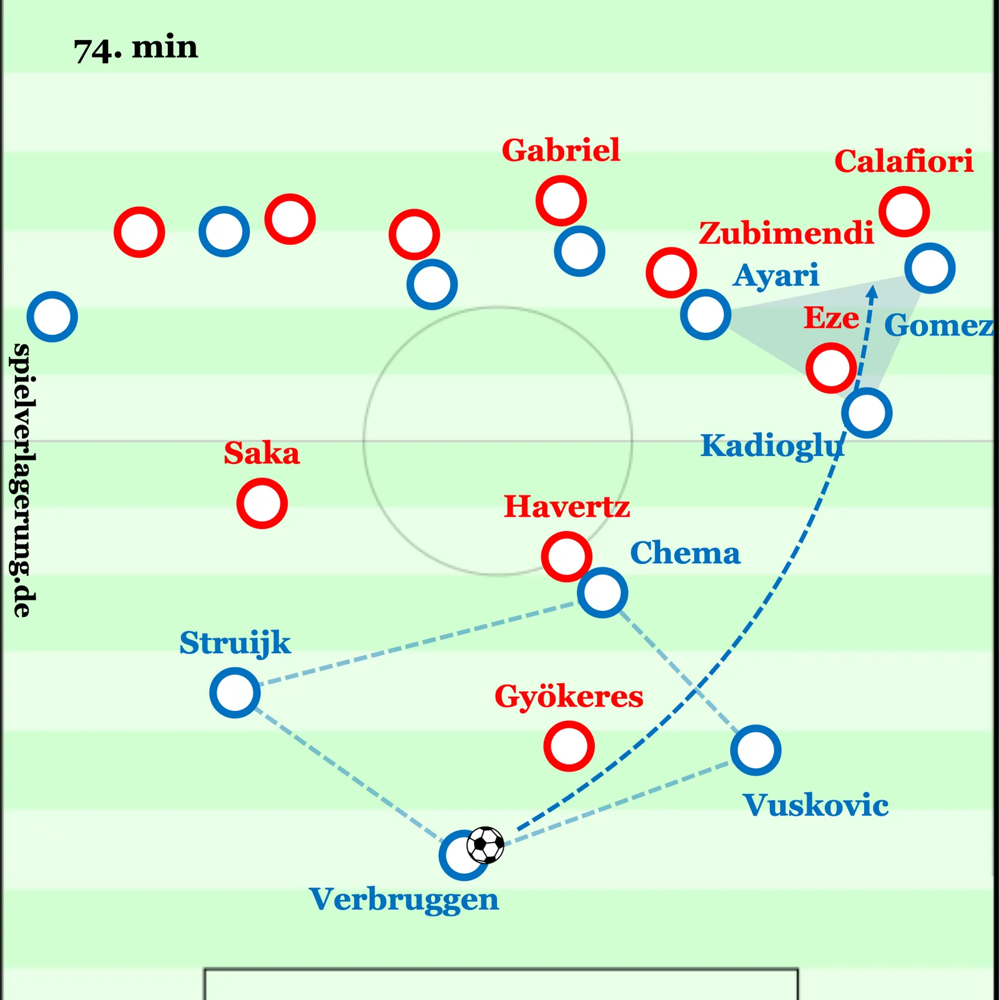
图：又一次出现右路的 3-3 结构。这里是运动战中的情形。
在左路，布莱顿通过"钉住"（pinning）而非长传运作。博斯卡利内切，把萨卡（Saka）拖入中路，把他从阿森纳防守端需要他所在的外侧区域带走；同时德库佩回撤，在盯人任务被拉扯开之后提供中距离的对角线传球。这种不对称是人选决定的结果：负责第二落点的球员在右路，能把盯防者拉离位置的球员在左路。阿森纳本需要在一侧压缩、在另一侧干净地交接盯人任务。
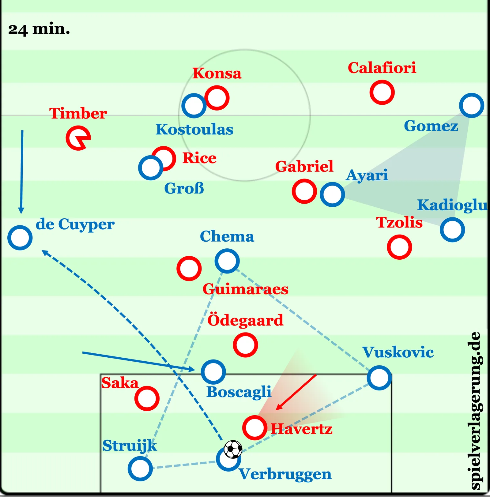
图：球队的进攻组织是不对称的：右路高位拉开，与左路形成对比——博斯卡利常扮演内收角色，补充现有的菱形结构，从而为德库佩打开空间。同时，格罗斯和科斯托拉斯牵制阿森纳右侧防守线的球员，使布莱顿能在逼抢下找到低平球的解决方案。
中场：拉开防守块
球到中场时有两种模式。
第一种是刻意回传给费尔布鲁根，把阿森纳的防守块拉出来，随后是深度组织阶段那种长传—短传结合的结构。这里的回传不是安全选项，而是首先创造逼抢线身后空间的工具。
第二种模式通过高速的中路与边路张力运作，辅以自身结构内的轮转。面对它，阿森纳反复未能以协调一致的方式交接逼抢任务——正是布莱顿在本方逼抢中干净解决过的同一个弱点。有球时，布莱顿的阵型接近 4-3-3：切马·安德烈斯是最深的 6 号位，格罗斯从左侧肋部自由活动，卡迪奥卢提早前压支援戈麦斯，博斯卡利在左路稍稍靠后起步。
进球：理念的证明
第 31 分钟格罗斯的 1–0，一个回合就包含了整套计划。 布莱顿从中场回传门将，起长传，输掉第一点，赢下第二点。经过一段倒脚后，下一次进攻面对一条已被破坏的防线：科斯托拉斯回撤，阿森纳的中场和孔萨前压，科斯托拉斯逆着压力方向把球回做给格罗斯。由于阿亚里同时反跑身后，阿森纳的后卫退防——格罗斯便有了从约 20 米处射门的时间。在组织过程中，布莱顿用轮转把吉马良斯（Guimarães）拉到了左路。
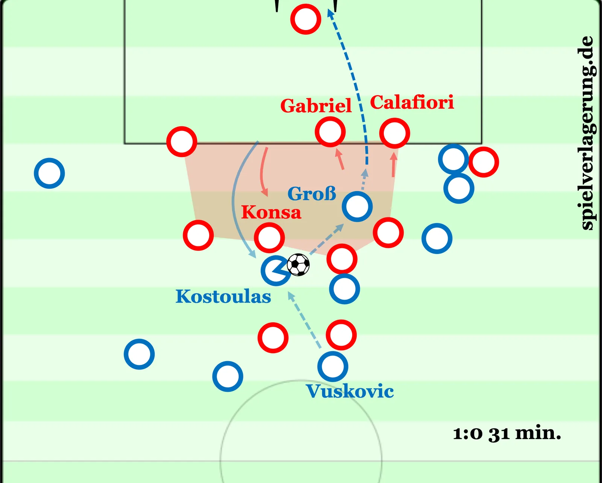
图：首粒进球源于一次阵地进攻。科斯托拉斯发现空当并跑入其中。他用一脚横跨支撑腿的传球，把球送到各线之间空当里的格罗斯脚下。格罗斯快速触球几下并带球压向防线，加布里埃尔和卡拉菲奥里（Calafiori）一起后退，从而打开了射门通道。
半场前科斯托拉斯的 2–0 遵循同样的逻辑，只是方向相反。 在一次本方定位球之后，布莱顿解围阿森纳的反击并立即再次转换，在阿森纳半场形成 4v5，射门再次来自远射，同时中后卫向后撤退。
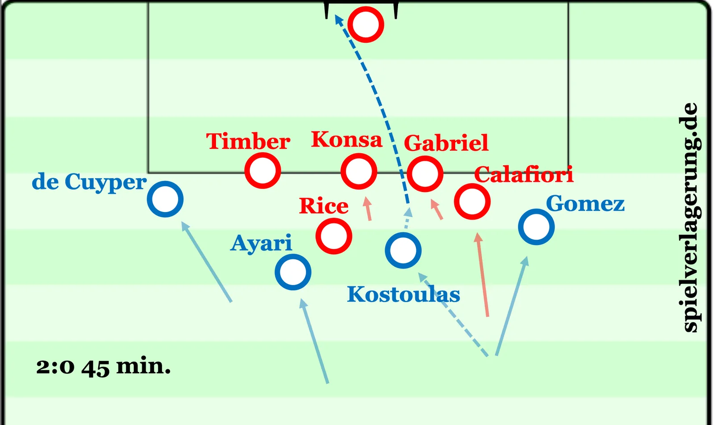
图：与 1-0 那球很像，两名后卫都扑向持球者附近倒地，从而为得分手打开空间——这次来自转换局面。
两个进球有相同的原因：阿森纳的中后卫前压、逼抢各线之间那名球员时太晚。 只有当射门动作开始时才反应，你无法从 20 到 25 米外进入封堵。值得注意的是，这种被动与阿森纳在自己进攻组织中表现出的被动如出一辙——一支不离开位置去接应的球队，也不会离开位置去封堵射手。
切马·安德烈斯的 3–0 来自角球：格罗斯从左路开出，布莱顿在远门柱制造了人数优势并用两个挡拆（blocks）保护它，切马完全无人盯防地起跳，头球击中门柱内侧入网。
下半场：没有"比赛管理"
两球领先，很多球队会退得更深防守。布莱顿带着不变的、甚至有时更高的逼抢强度出场，协调性明显经过演练：即使在动态情况下，盯人任务也能干净地互换，阿森纳的结构性调整也被吸收。
阿森纳在上半场曾在布莱顿半场完成过几段有组织的控球；下半场则更难。在那些阶段，他们以三后卫组织，赖斯作为第三中卫，厄德高回撤到吉马良斯身旁，边后卫占据肋部。阿尔特塔在约一小时处做出反应：苏比门迪（Zubimendi）和梅里诺（Merino）换下廷贝尔（Timber）和吉马良斯，赖斯移到右后卫，随后不久吉奥克雷斯（Gyökeres）和埃泽（Eze）换下厄德高和特罗萨德（Tzolis）。但没有明显效果，因为问题不在于阵型，而在于阵型之前的盯人任务。
还有一层通常在分析中会被忽略：布莱顿刻意使用战术犯规，阻止阿森纳找到节奏。阿尔特塔赛后承认比赛"非常难以控制"，并指出球队输掉了第一点和第二点，以及布莱顿的直接性。
结论
阿尔特塔的阿森纳被如此清晰地压制是罕见的。以主动、侵略性的方式做到就更加罕见——多数从阿森纳身上拿分的球队，都是用低位防守加高效。许尔策勒赛后刻意退后一步，赞扬球员的勇气，这切中了要害：这个计划只有在十一名球员都愿意在每一个回合中贯彻它时才有效。
有意思的问题是这一理念来自哪里。切尔西是一个常见对手：布莱顿在那里拥有 74% 的控球率，却以 3–4 输给了一支反击型球队——控制到极致，却没有回报。阿隆索的切尔西对阿森纳尝试了相反的路线，刻意交出控制，同样没有成功。可能的出处介于两者之间：既不放弃控制，也不追逐控制，而是自己制造这种失稳的比赛状态，并为之做好准备。
阿森纳没有理由恐慌，但阿尔特塔需要找到对付高位逼抢的答案。进攻组织在很长阶段里可预测，最重要的是缺少"身后有速度的直接选项"作为威胁。只要这一点不存在，人盯人逼抢对付这支球队就代价极低。
对布莱顿来说，悬而未决的问题是"可复制性"。如此坚决的人盯人、带覆盖阴影的集体回追、以及需要所有人同时触发的边线陷阱，在一个英格兰式的密集赛程周里很难两次复现。这个计划是否有效，在这个下午已得到答案。它能多频繁地被执行，将决定这个赛季。
作者简介：LC 常出现在教室里，最好是在足球场上，偶尔也在 LinkedIn 上。
编者按：我们正在重启 Spielverlagerung。在"Next Generation"栏目下，我们的新作者、分析师和教练发布他们的作品。他们中有些人已有经验，有些人则刚刚迈出写文章的第一步。并非所有稿件都已成熟，但为了作者自身的成长，我们认为让它们公开可得、以便交流与讨论非常重要。因此我们希望大家把"Next Generation"的文章理解为一个发展中的项目，并以过程的标准来衡量它。部分文章已经达到可以出现在 Spielverlagerung 首页的水准。